Parte 1: Tratamiento de Miembros Inferiores
34. Región Inguinal (Anterosuperior)
Secuencia Visual del Paso
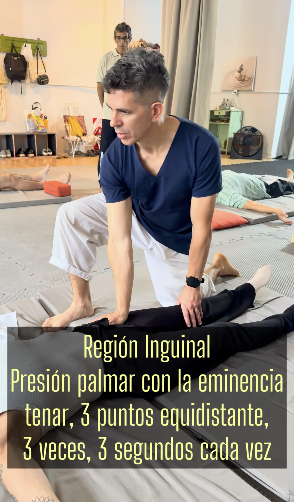
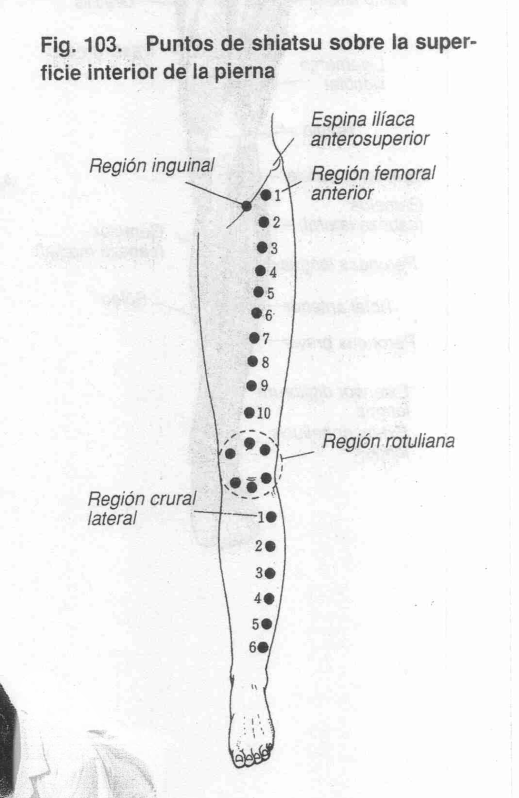
| Postura del Paciente | Decúbito supino con o sin almohada, piernas rectas y brazos extendidos a los lados[cite: 1]. |
|---|---|
| Postura del Terapeuta | Básica / Kata Hiza, al lado izquierdo del paciente[cite: 2]. |
| Tipo de Presión | Palmar, con la eminencia tenar. En el lado izquierdo presionará con la mano derecha mientras la palma de la mano izquierda sujeta la parte inferior de la región femoral anterior[cite: 2, 3]. |
| Número de Puntos | 3 puntos equidistantes[cite: 4]. |
| Localización e Intervalo | Sobre la ingle, entre la espina ilíaca anterosuperior y el hueso púbico. Dirección perpendicular; 3 veces, 3 segundos cada vez[cite: 4, 5]. |
35. Región Femoral Anterior
Secuencia Visual del Paso
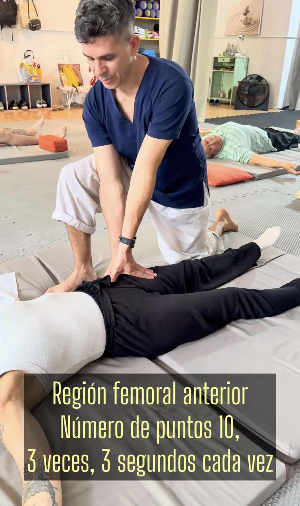
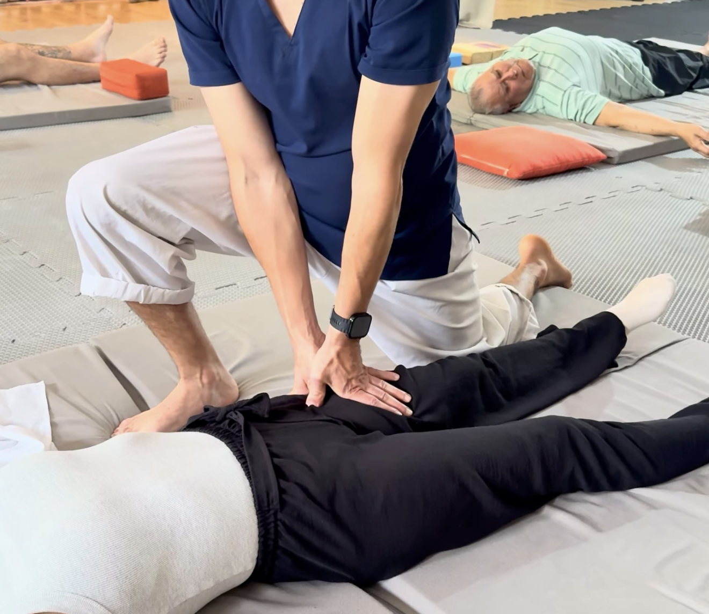
| Postura del Paciente | Decúbito supino con o sin almohada, piernas rectas y brazos extendidos a los lados[cite: 6]. |
|---|---|
| Postura del Terapeuta | Básica / Kata Hiza, al lado izquierdo del paciente[cite: 7]. |
| Tipo de Presión | Pulgar sobre pulgar. En el lado izquierdo pulgar derecho debajo, y en el lado derecho pulgar izquierdo debajo[cite: 7, 8]. |
| Número de Puntos | 10 puntos lineales[cite: 9]. |
| Dirección y Tiempos | Comienza inmediatamente por debajo de la espina ilíaca anterosuperior hasta dos dedos por encima de la rodilla. Dirección perpendicular; 3 veces, 3 segundos cada vez[cite: 9, 10]. |
36. Región Femoral Medial (Aductores)
Secuencia Visual del Paso
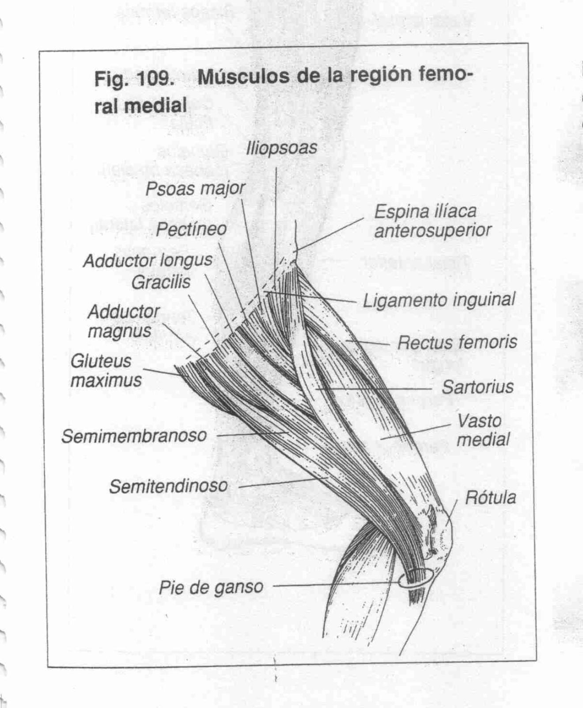
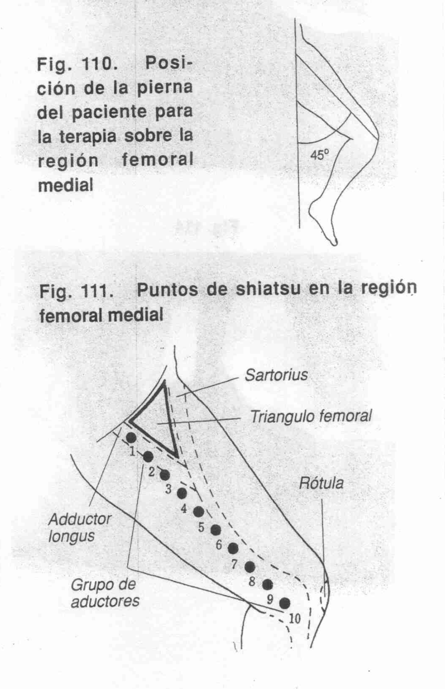
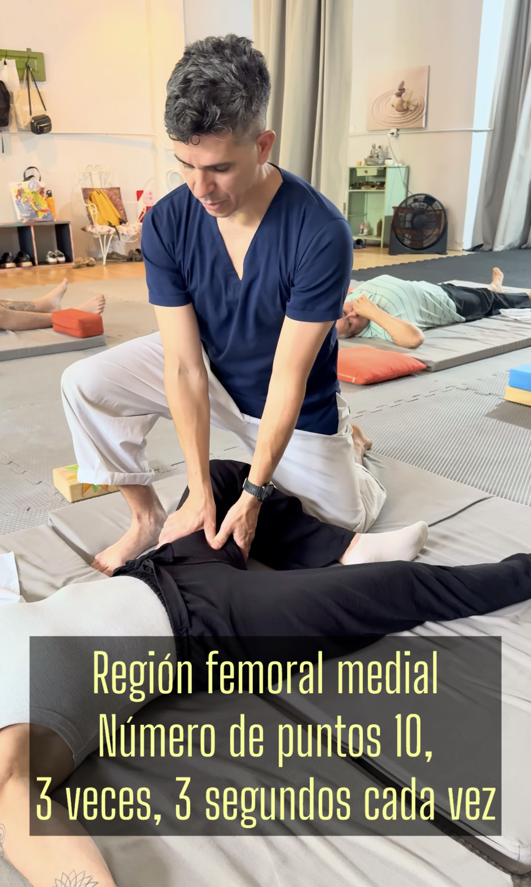
| Postura del Paciente | Decúbito supino con o sin almohada, pierna que trabaja abierta a 45° y brazos extendidos a los lados. |
|---|---|
| Postura del Terapeuta | Básica / Kata Hiza, al lado izquierdo del paciente[cite: 12]. |
| Tipo de Presión | Pulgar sobre pulgar. En el lado izquierdo pulgar derecho debajo, y en el lado derecho pulgar izquierdo debajo[cite: 12, 13]. |
| Anatomía Relacionada | Aductor largo (Adductor longus), grupo de aductores, músculo Sartorio (Sartorius) y triángulo femoral. |
| Línea y Puntos | 10 puntos. Desde el triángulo femoral, sobre los músculos aductores, particularmente el aductor largo, hasta un punto antes de la articulación de la rodilla. Dirección perpendicular; 3 veces, 3 segundos cada vez[cite: 11, 14, 15]. |
37. Región Femoral Lateral
Secuencia Visual del Paso
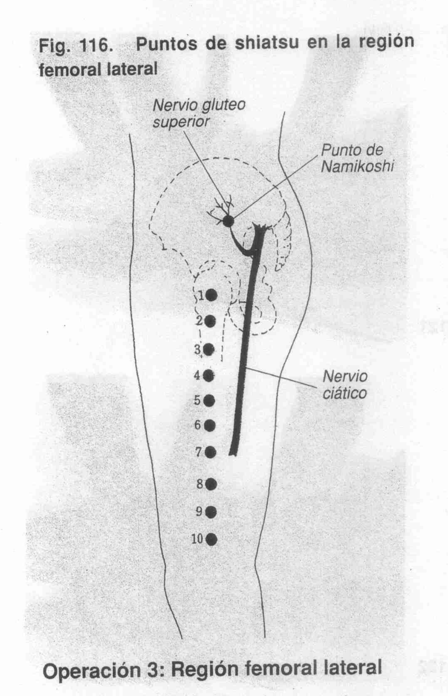
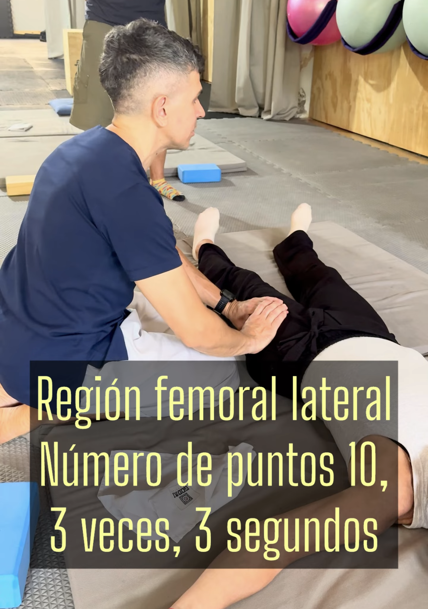
| Postura del Paciente | Decúbito supino con o sin almohada, piernas rectas y brazos extendidos a los lados[cite: 16]. |
|---|---|
| Postura del Terapeuta | Postura de rodillas / Seiza, posicionado frente a la región de trabajo[cite: 17]. |
| Tipo de Presión | Pulgares aplicados firmemente en forma de V[cite: 17]. |
| Relaciones Nerviosas | Nervio glúteo superior, Punto de Namikoshi y Nervio ciático[cite: 16]. |
| Línea de Trabajo | 10 puntos equidistantes desde el borde inferior del trocánter mayor hasta el borde superior del cóndilo lateral del fémur[cite: 17]. Dirección perpendicular; 3 veces, 3 segundos[cite: 18]. |
38. Región Rotular
Secuencia Visual del Paso
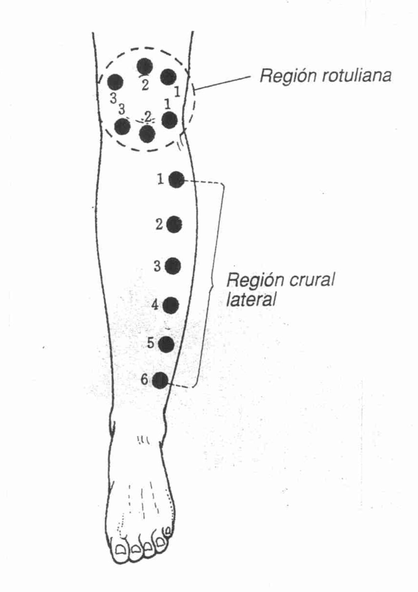
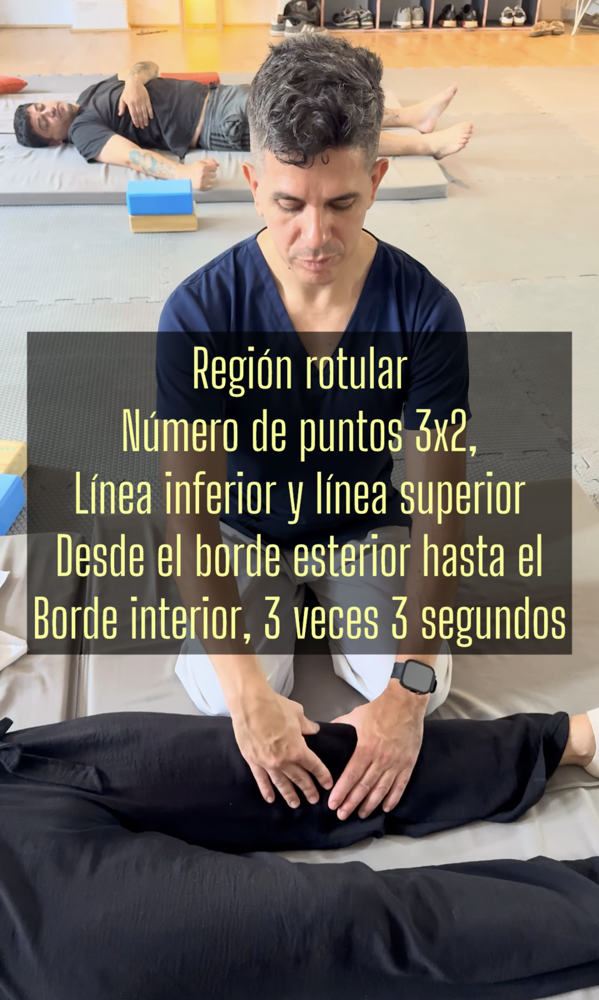
| Postura del Paciente | Decúbito supino con o sin almohada, piernas rectas y brazos extendidos a los lados[cite: 18]. |
|---|---|
| Postura del Terapeuta | Postura de rodillas / Seiza, posicionado frente a la región[cite: 19]. |
| Tipo de Presión | Sólo pulgar. Número de puntos: 3 x 2 líneas periféricas[cite: 19, 20]. |
| Mecánica de Sujeción | Línea inferior: Pulgar izquierdo trabaja, mano derecha sujeta por encima de la rótula [cite: 20]. Línea superior: Pulgar derecho trabaja, mano izquierda sujeta por debajo de la rótula (alternar de forma coordinada)[cite: 20]. |
| Dirección y Tiempos | Del borde exterior de la rótula hacia el interior (tanto inferior como superior)[cite: 21]. Dirección perpendicular; 3 veces, 2 segundos[cite: 22]. |
39. Región Sural / Crural Lateral
Secuencia Visual del Paso
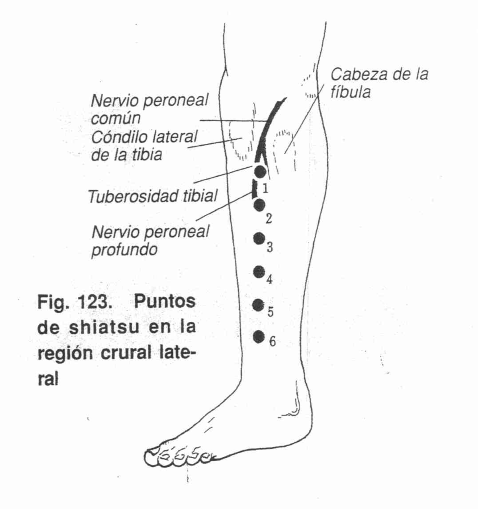
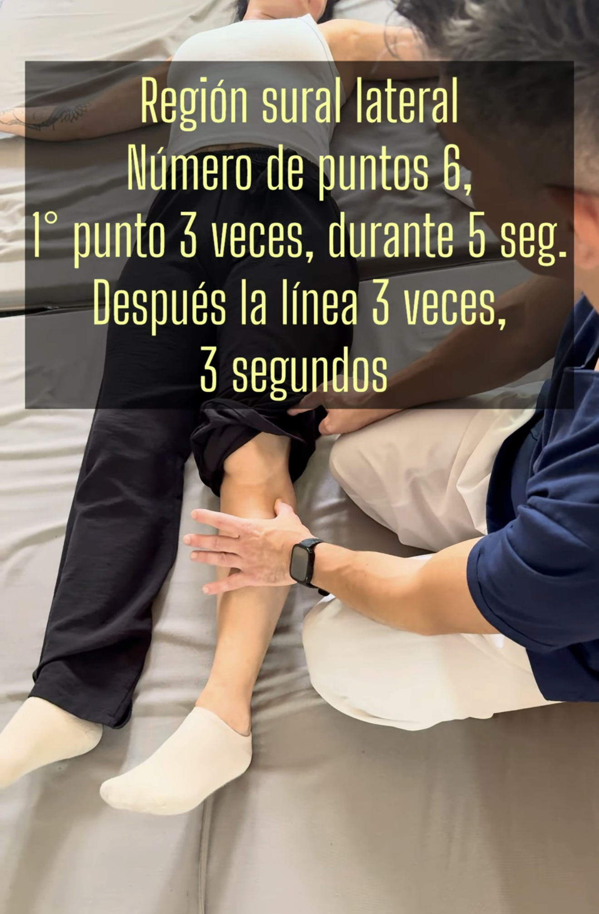
| Anatomía Específica | Región rotuliana, cabeza de la fíbula (peroné), cóndilo lateral de la tibia, tuberosidad tibial, nervio peroneal común y nervio peroneal profundo[cite: 22]. |
|---|---|
| Postura General | Paciente en decúbito supino[cite: 22]. Terapeuta en Seiza, frente a la pierna[cite: 23]. |
| Tipo de Presión | Pulgar sobre pulgar. En el lado izquierdo pulgar izquierdo debajo, y en el lado derecho pulgar derecho debajo[cite: 23]. |
| Estrategia de Puntos | 6 puntos en total[cite: 24]. El 1° punto se localiza a unos 3 cm diagonalmente por debajo de la tuberosidad tibial y por debajo del cóndilo lateral de la tibia[cite: 24]. |
| Dirección y Protocolo | La línea desciende por el centro del hueco que forma el peroné hasta antes del maléolo externo (dirección perpendicular) [cite: 25, 26]. Protocolo temporal: Primero el 1º punto 3 veces durante 5 segundos[cite: 26]. Después la línea completa: 3 veces, 3 segundos[cite: 26]. |
40. Región Tarsal (Tobillo Anterointerno)
Secuencia Visual del Paso
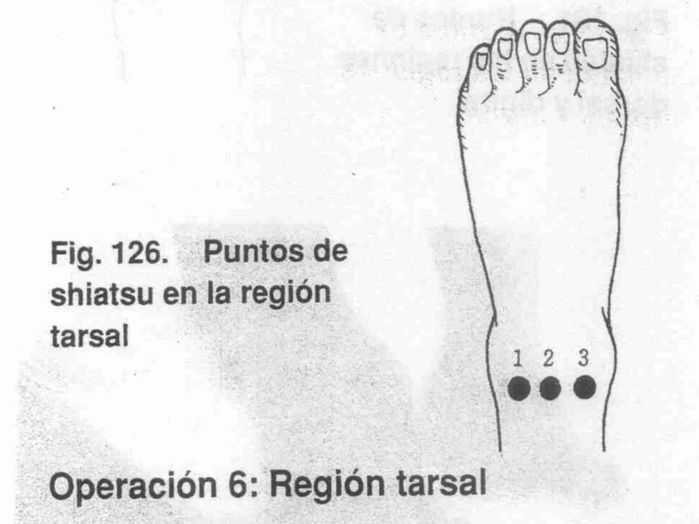
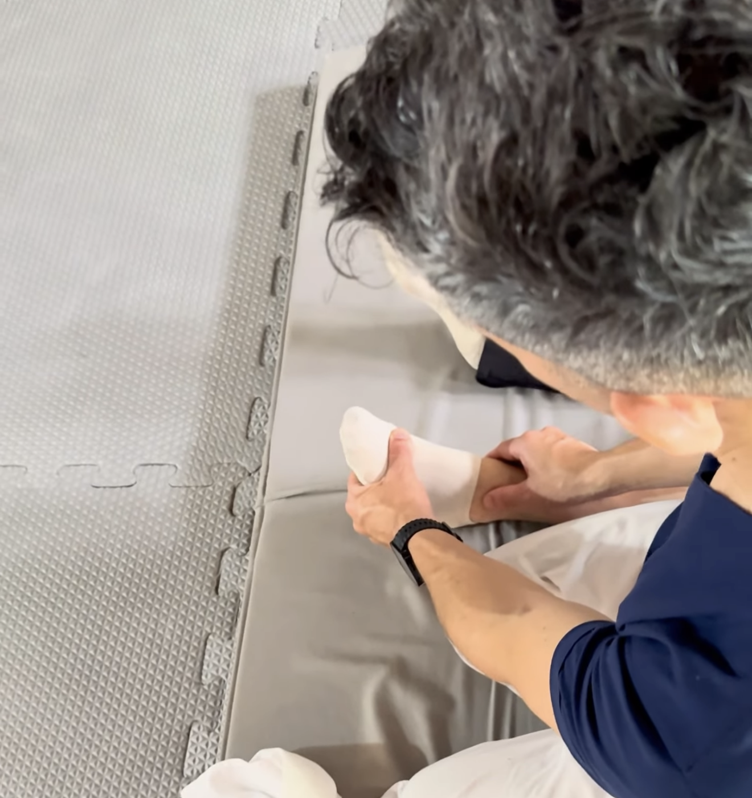
| Posturas Básicas | Paciente decúbito supino con almohada, piernas rectas[cite: 27]. Terapeuta en Seiza, frente a la región distal[cite: 28]. |
|---|---|
| Tipo de Presión | Un sólo pulgar. En el lado izquierdo pulgar derecho, y en el lado derecho pulgar izquierdo[cite: 28]. |
| Maniobra de Sostén | La mano contraria del terapeuta sostiene firmemente los dedos del pie del paciente para dar estabilidad[cite: 29]. |
| Línea y Puntos | 3 puntos situados linealmente entre los dos maléolos, avanzando estrictamente desde el maléolo externo hacia el interno[cite: 29]. |
| Dosis de Presión | Perpendicular [cite: 29]; aplicada en series de 3 veces, con 3 segundos de duración estable por punto[cite: 30]. |
41. Región Dorsal del Pie (Canales Interóseos)
Secuencia Visual del Paso
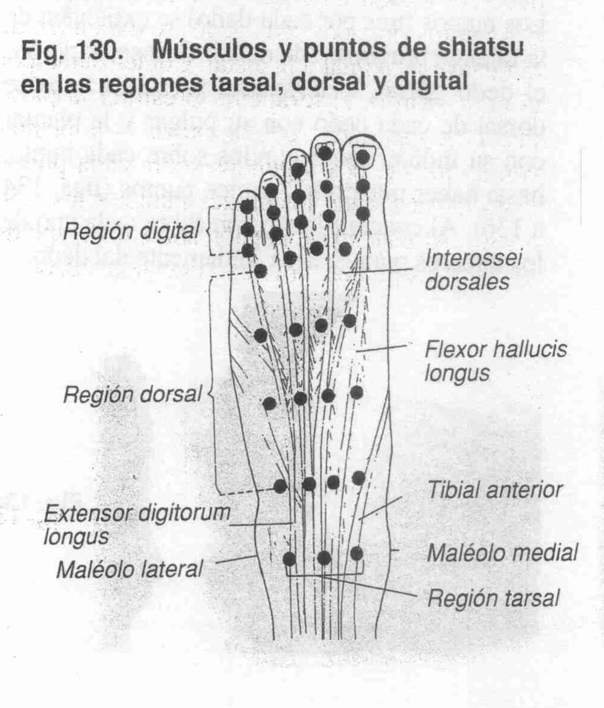
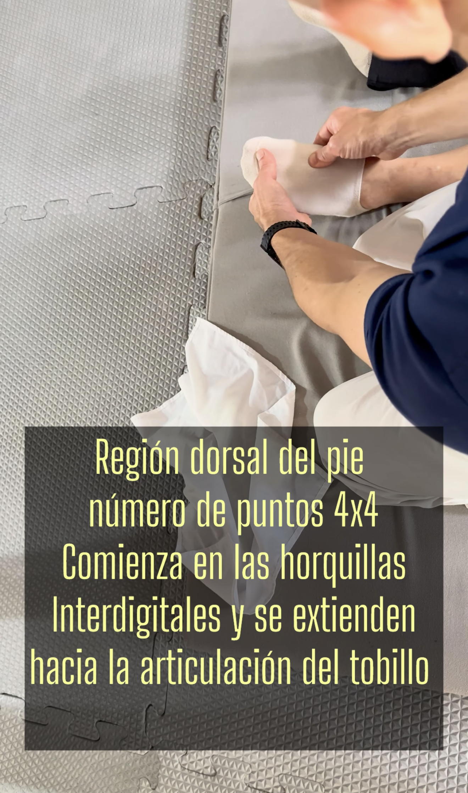
| Anatomía de Soporte | Región digital, región dorsal, músculos interóseos dorsales (Interossei dorsales), tendones del extensor largo de los dedos, flexor largo del dedo gordo, tibial anterior y referencias de ambos maléolos[cite: 30]. |
|---|---|
| Posturas de Trabajo | Paciente decúbito supino[cite: 30]. Terapeuta en Seiza frente a la región, mirando directamente hacia el pie del paciente[cite: 31]. |
| Mecánica de Presión | Un sólo pulgar. En el lado izquierdo se emplea el pulgar derecho, y en el lado derecho el pulgar izquierdo[cite: 31, 32]. La mano opuesta sostiene con firmeza los dedos del pie[cite: 33]. |
| Grilla y Dirección | Matriz de 4 x 4 (4 líneas de 4 puntos cada una)[cite: 33]. Las líneas comienzan en las horquillas interdigitales y se extienden en dirección ascendente hacia la articulación del tobillo[cite: 34]. |
| Orden de Ejecución | Comenzando obligatoriamente en la 1° línea situada entre el dedo gordo y el 2º dedo[cite: 35]. Dirección perpendicular; 1 vez, 3 segundos por punto[cite: 35, 36]. |
42. Región Digital del Pie (Dedos)
Secuencia Visual del Paso
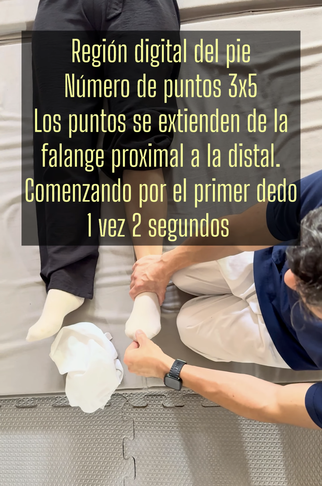
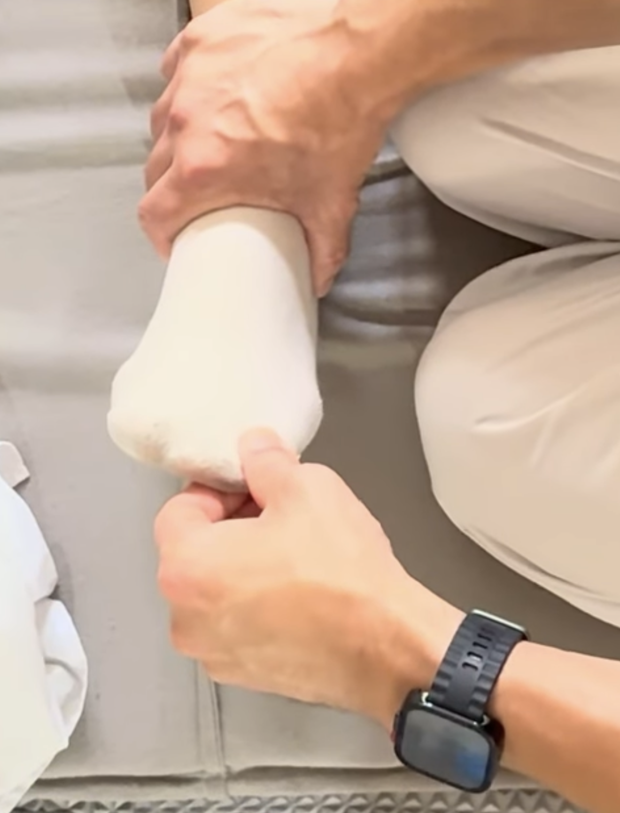
| Postura Base | Paciente en decúbito supino con o sin almohada[cite: 36]. Terapeuta en Seiza, lateralmente a la región dorsal del pie[cite: 37]. |
|---|---|
| Técnica de Pinza | Presión con pinza con pulgar e índice. En el lado izquierdo se utiliza la mano izquierda, y en el lado derecho la mano derecha. La otra mano del terapeuta sujeta el tobillo de forma estabilizadora[cite: 37, 38]. |
| Distribución | 3 puntos x 5 dedos (Total 15 puntos)[cite: 38]. Los puntos se extienden progresivamente desde la falange proximal hacia la distal, iniciando en el primer dedo (dedo gordo) hasta el quinto[cite: 39]. |
| Detalle Local | Los primeros puntos se aplican encima de las articulaciones de los artejos, a excepción de los últimos puntos que se sitúan sobre el nacimiento de la uña (lecho ungueal)[cite: 93]. |
| Aplicación Técnica | Dirección perpendicular [cite: 40]; ejecutado 1 vez, sosteniendo la presión fija durante 2 segundos[cite: 40]. |
43. Maniobra de Pie (Movilidad del Tobillo)
Secuencia Visual del Paso
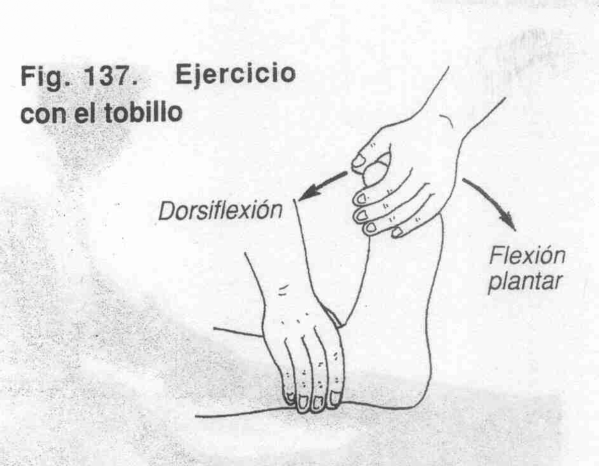
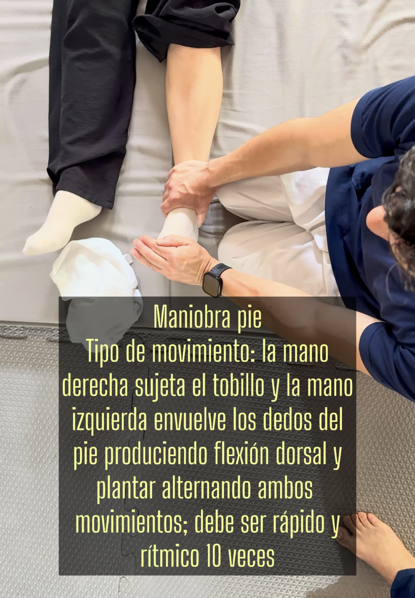
| Posturas Requeridas | Paciente decúbito supino, piernas rectas y brazos extendidos[cite: 40]. Terapeuta posicionado en Seiza lateralmente a la región[cite: 41]. |
|---|---|
| Mecánica del Ejercicio | La mano derecha sujeta el tobillo y la mano izquierda envuelve los dedos del pie del paciente[cite: 41]. |
| Dinámica Articular | Se produce una flexión dorsal (dorsiflexión) y flexión plantar alternando de forma continua ambos movimientos basculantes[cite: 41]. |
| Frecuencia Ritmo | La maniobra articular debe ser ejecutada de manera notablemente rápida y rítmica[cite: 42]. |
| Repeticiones Oficiales | Se repite de forma secuencial un total estricto de 10 veces[cite: 42]. |
44. Maniobra Plantar (Estiramiento del Empeine)
Secuencia Visual del Paso
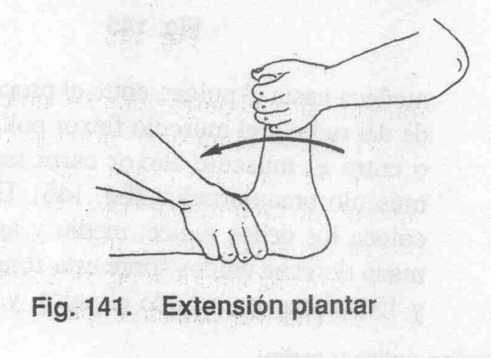
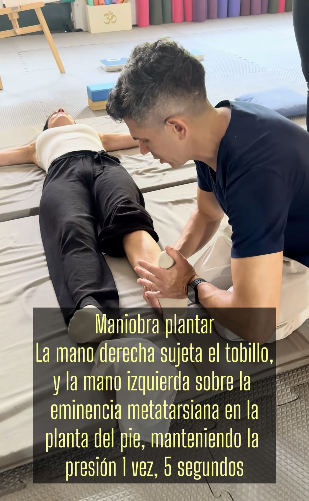
| Postura General | Paciente decúbito supino con o sin almohada[cite: 42]. Terapeuta posicionado en Seiza, ubicado lateralmente a la región[cite: 43]. |
|---|---|
| Palancas del Terapeuta | La mano derecha sujeta el tobillo, y la mano izquierda se posiciona sobre la eminencia metatarsiana en la planta del pie, manteniendo la presión constante[cite: 44]. |
| Dirección del Estiramiento | Tracción y empuje dirigido firmemente hacia el empeine[cite: 45]. |
| Dosificación | Se ejecuta 1 vez única, sosteniendo el estiramiento profundo durante 5 segundos[cite: 45]. |
45. Maniobra de Extensión Completa de la Pierna
Secuencia Visual del Paso
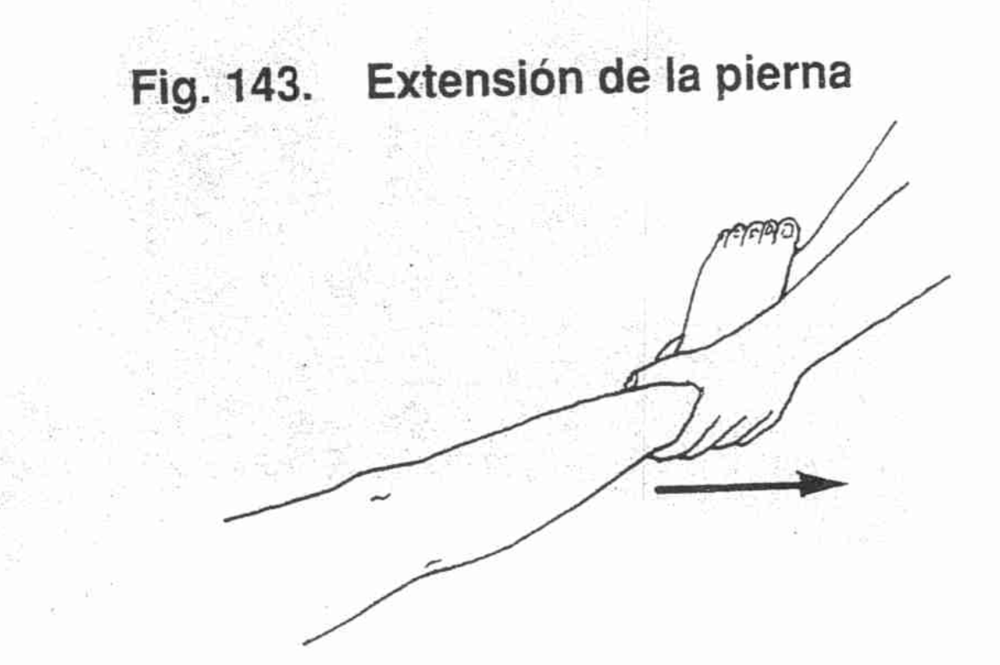
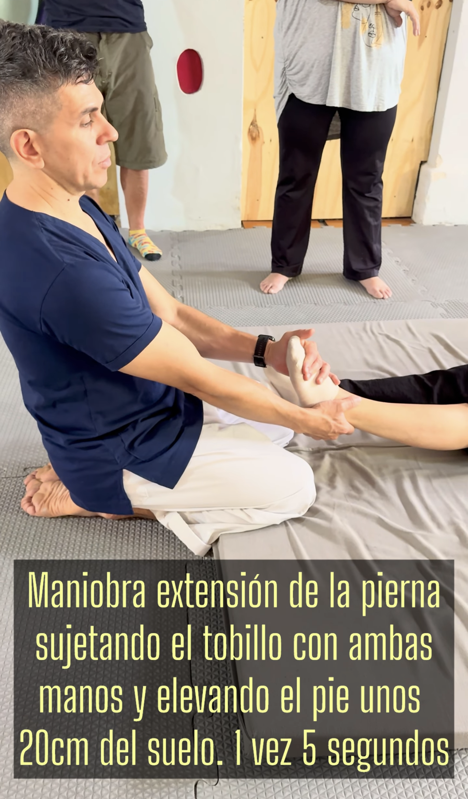
| Postura Inicial | Paciente yace en decúbito supino con o sin almohada, piernas rectas y brazos extendidos[cite: 46]. |
|---|---|
| Postura del Terapeuta | Seiza, de cara a los pies del paciente[cite: 47]. |
| Anclaje Técnico | Oponiendo contra el talón del pie derecho del paciente la rodilla izquierda del terapeuta[cite: 48]. |
| Modo de Estiramiento | Sujetando el tobillo con ambas manos y elevando el pie unos 20 cm del suelo[cite: 49]. |
| Acción de Carga | El terapeuta inclina lentamente todo su cuerpo hacia atrás, generando tracción axial; 1 vez, 5 segundos[cite: 50]. |
Parte 2: Tratamiento de Miembros Superiores y Maniobras
46. Región Axilar (Control del Pulso Radial)
Secuencia Visual del Paso
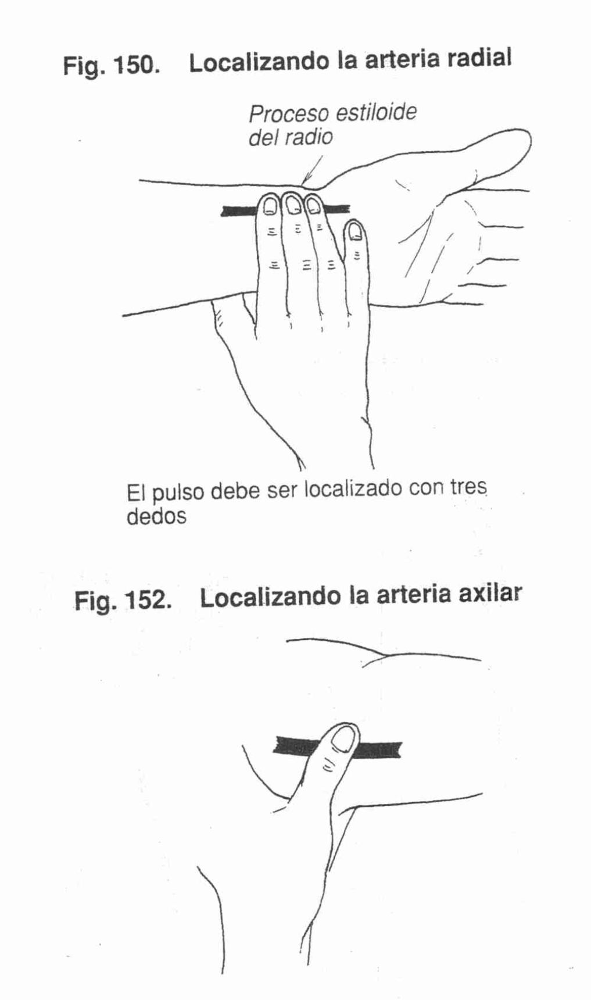
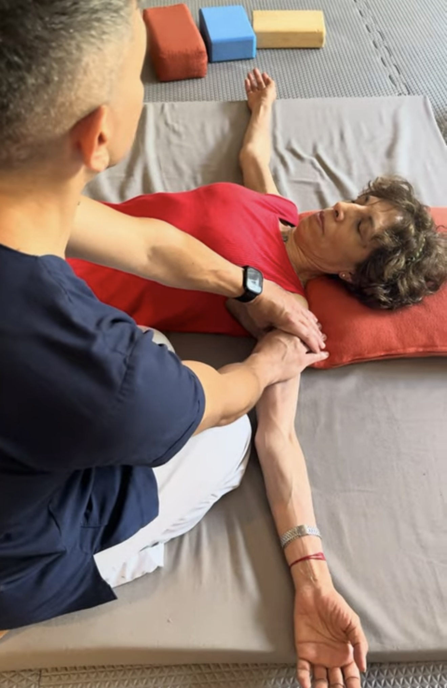
| Anatomía de Referencia | Arteria axilar, músculo coracobraquial, deltoides, bíceps braquial (Biceps brachii), tríceps braquial (Triceps brachii), arteria radial, tendón del braquiorradial, proceso estiloides del radio, tendón del flexor carpi radialis y músculo latísimo del dorso[cite: 51]. |
|---|---|
| Postura del Paciente | Paciente en decúbito supino con o sin almohada, piernas rectas, el brazo extendido 90° con la palma hacia arriba[cite: 51]. |
| Postura del Terapeuta | Seiza, posicionado frente a la fosa axilar[cite: 52]. |
| Tipo y Técnica de Presión | Pulgar sobre pulgar en forma de V. Coloca los dedos índice, medio y anular unidos sobre la arteria radial en la muñeca[cite: 52]. |
| Maniobra y Dirección | Una vez hallado el pulso, con el pulgar izquierdo presionará la arteria axilar en el centro del hueco axilar[cite: 53]. Dirección hacia la región supraescapular; 3 veces, 5 segundos[cite: 54]. |
47. Región Braquial Medial (Bíceps / Tríceps Interno)
Secuencia Visual del Paso
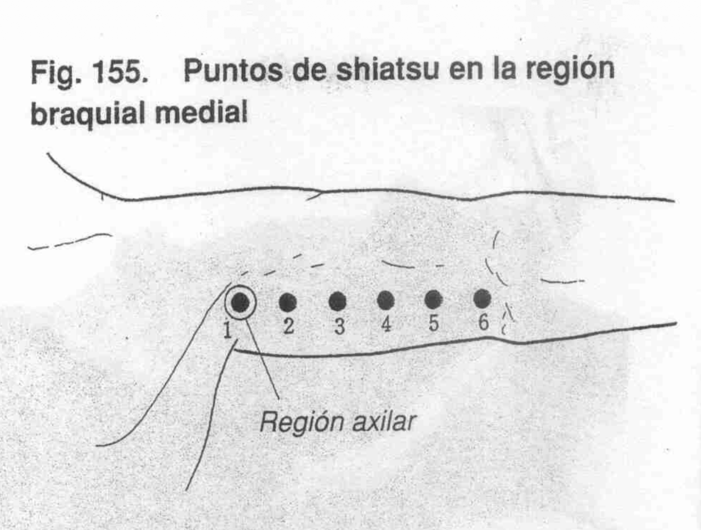
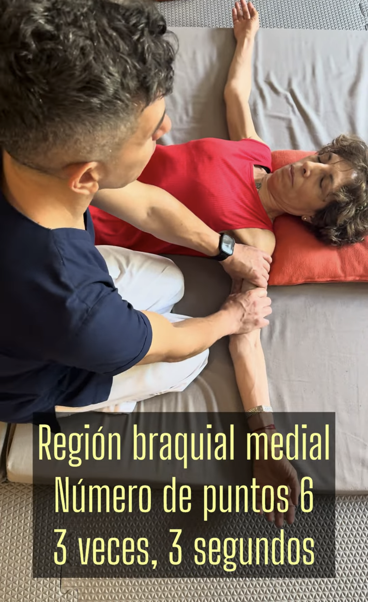
| Postura del Paciente | Decúbito supino con o sin almohada, piernas rectas, brazo extendido a 90° con la palma hacia arriba[cite: 55]. |
|---|---|
| Postura del Terapeuta | Seiza, frente a la región[cite: 56]. |
| Tipo de Presión | Pulgar sobre pulgar en forma de V[cite: 57]. |
| Puntos de la Línea | 6 puntos lineales consecutivos[cite: 57]. |
| Trayecto y Tiempos | Desde el punto axilar hacia la fosa cubital[cite: 57]. Dirección perpendicular; aplicado 3 veces, 3 segundos por punto[cite: 58]. |
48. Región de la Fosa Cubital (Pliegue del Codo)
Secuencia Visual del Paso
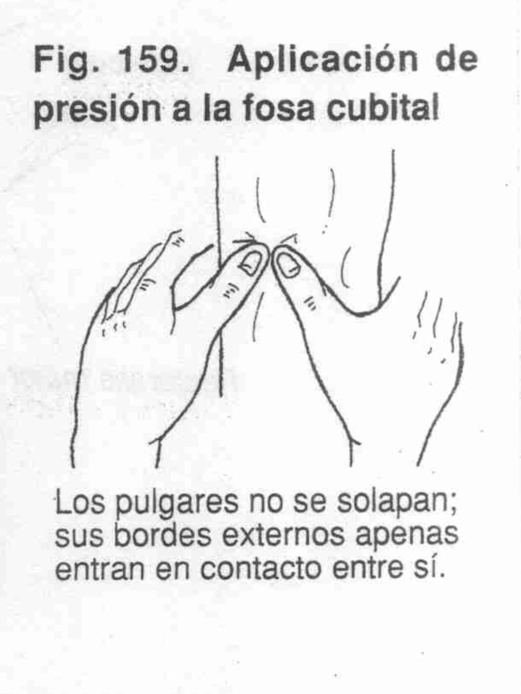
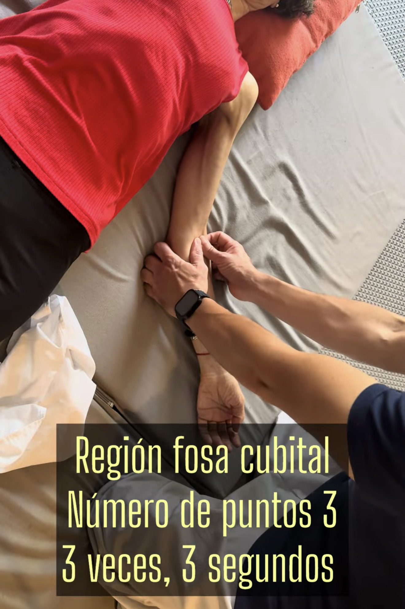
| Anatomía de la Fosa | Tendón del bíceps, músculo pronador redondo (Pronator teres), braquiorradial, flexor carpi radialis, palmaris longus y flexor carpi ulnaris[cite: 58]. |
|---|---|
| Postura del Paciente | Decúbito supino con o sin almohada, piernas rectas, el brazo del paciente extendido a 45°[cite: 58]. |
| Postura del Terapeuta | De rodillas / Kiza de modo que la mano del paciente caiga justo entre ellas[cite: 59]. |
| Tipo de Presión | Pulgares en forma de A[cite: 60]. Número de puntos: 3[cite: 60]. |
| Línea de Puntos | Del lado interno al externo[cite: 60]. Dirección de la presión perpendicular; 3 veces, 3 segundos cada vez[cite: 61]. |
49. Región Antebraquial Medial (Cara Interna anterior)
Secuencia Visual del Paso
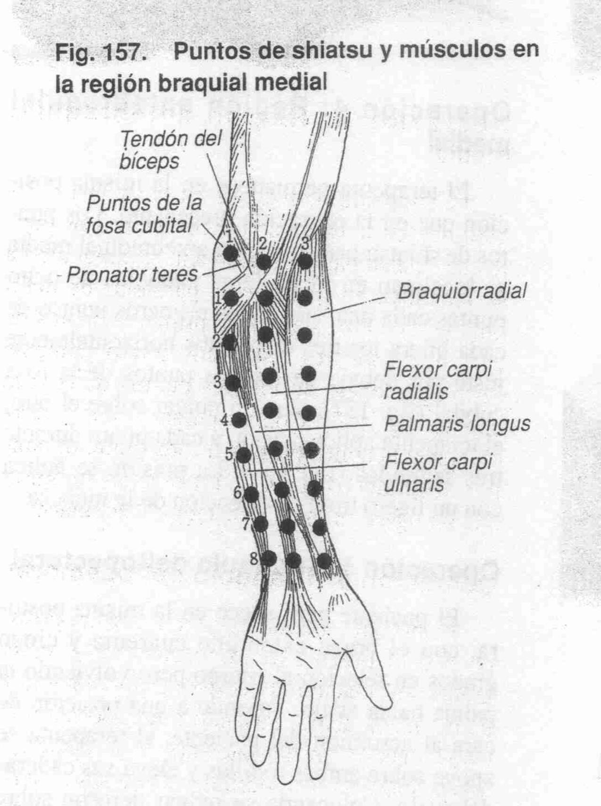
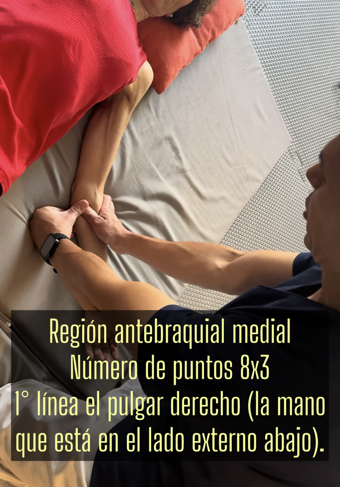
| Posturas de Control | Paciente decúbito supino con o sin almohada, piernas rectas, brazo extendido a 45°[cite: 61]. Terapeuta de rodillas / Kiza de modo que la mano caiga entre ellas[cite: 62]. |
|---|---|
| Estrategia de 3 Líneas | Estructura de 8 x 3 líneas de puntos [cite: 63]. 1° línea: El pulgar derecho (la mano que está en el lado externo debajo) [cite: 64]. 2° línea (Centro): El pulgar derecho debajo (zurdos el pulgar izquierdo) [cite: 65]. 3° línea: El pulgar izquierdo debajo (la mano que está debajo en el lado interno)[cite: 66]. |
| Dirección y Sentido | Desde un punto debajo de la fosa cubital, hasta la muñeca, y desde el lado interno al externo[cite: 67]. |
| Mecánica Dinámica | Dirección de la presión perpendicular, con una ligera tracción hacia la muñeca; 1 vez, 3 segundos[cite: 68]. |
50. Región Deltopectoral
Secuencia Visual del Paso
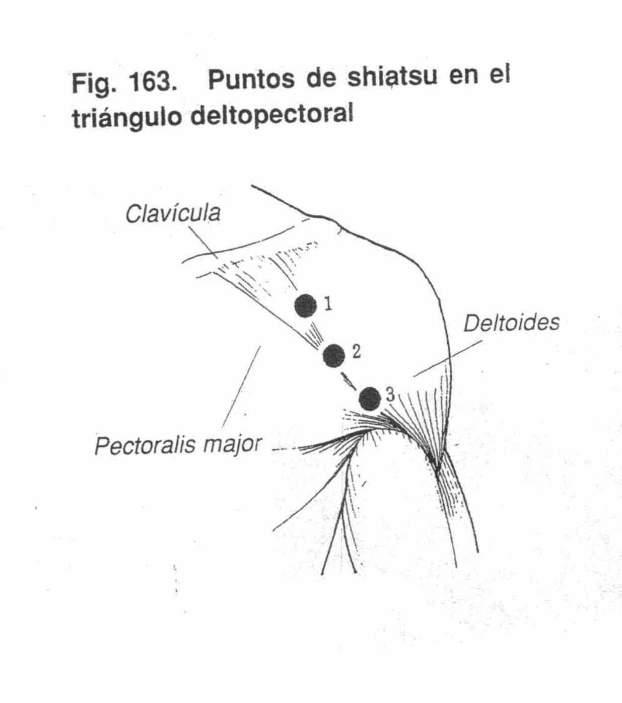
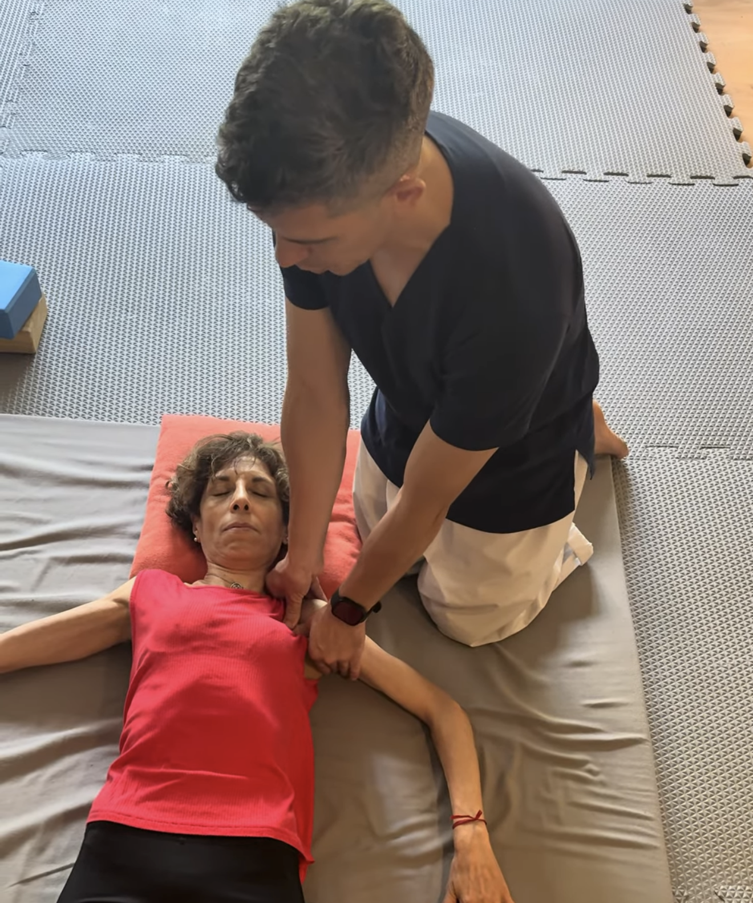
| Anatomía Específica | Clavícula, músculo pectoral mayor (Pectoralis major) y deltoides[cite: 69]. |
|---|---|
| Postura del Paciente | Decúbito supino con o sin almohada, piernas rectas. El brazo extendido a 45° y el antebrazo en rotación interna (palma hacia abajo)[cite: 70]. |
| Postura del Terapeuta | De rodillas / Kiza[cite: 70]. |
| Tipo de Presión | Pulgar sobre pulgar. Lado izquierdo pulgar izquierdo debajo[cite: 71]. |
| Línea y Tiempos | 3 puntos[cite: 72]. Dirección de la línea debajo de la clavícula hacia la axila; 3 veces, 3 segundos[cite: 72]. |
51. Región Braquial Lateral (Tríceps Externo)
Secuencia Visual del Paso
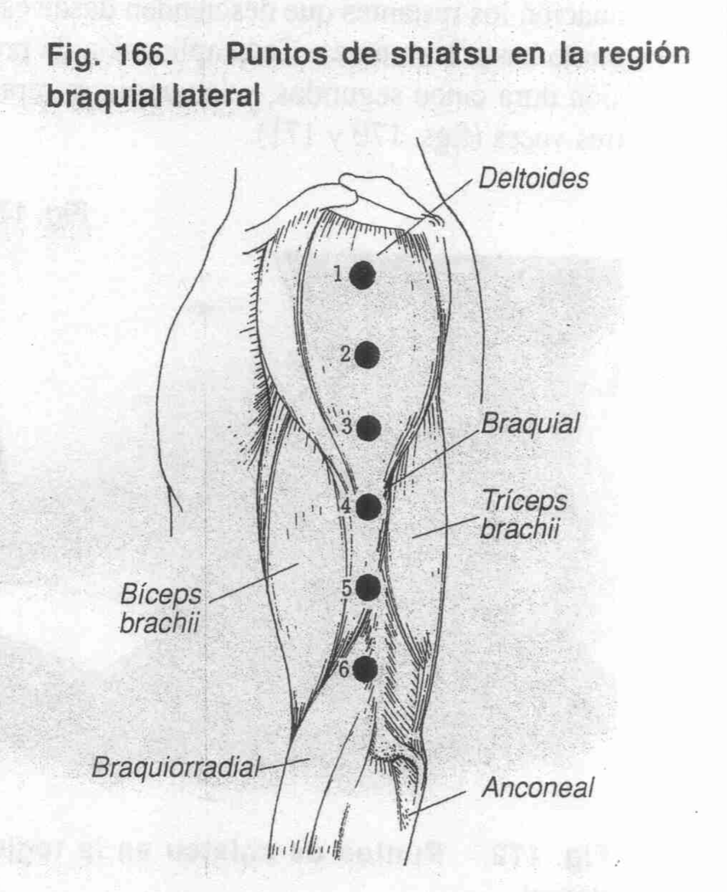
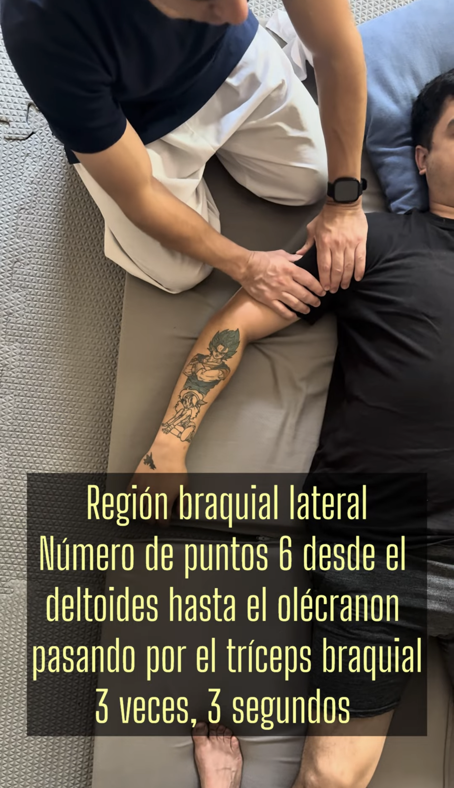
| Anatomía de Superficie | Músculo deltoides, braquial, tríceps braquial (Triceps brachii), bíceps braquial, braquiorradial y ancóneo (Anconeal)[cite: 73]. |
|---|---|
| Postura del Paciente | Decúbito supino con o sin almohada, piernas rectas y brazo abierto a 45° con el codo doblado y la palma hacia abajo[cite: 73]. |
| Postura del Terapeuta | Seiza, frente a la región[cite: 74]. |
| Tipo de Presión | Pulgares en forma de V[cite: 74]. Número de puntos: 6[cite: 74]. |
| Línea de Trabajo | Desde deltoides hasta el olecranon pasando por el tríceps braquial[cite: 74]. Dirección perpendicular; 3 veces, 3 segundos[cite: 75]. |
52. Región Antebraquial Lateral (Extensores del Dorso)
Secuencia Visual del Paso
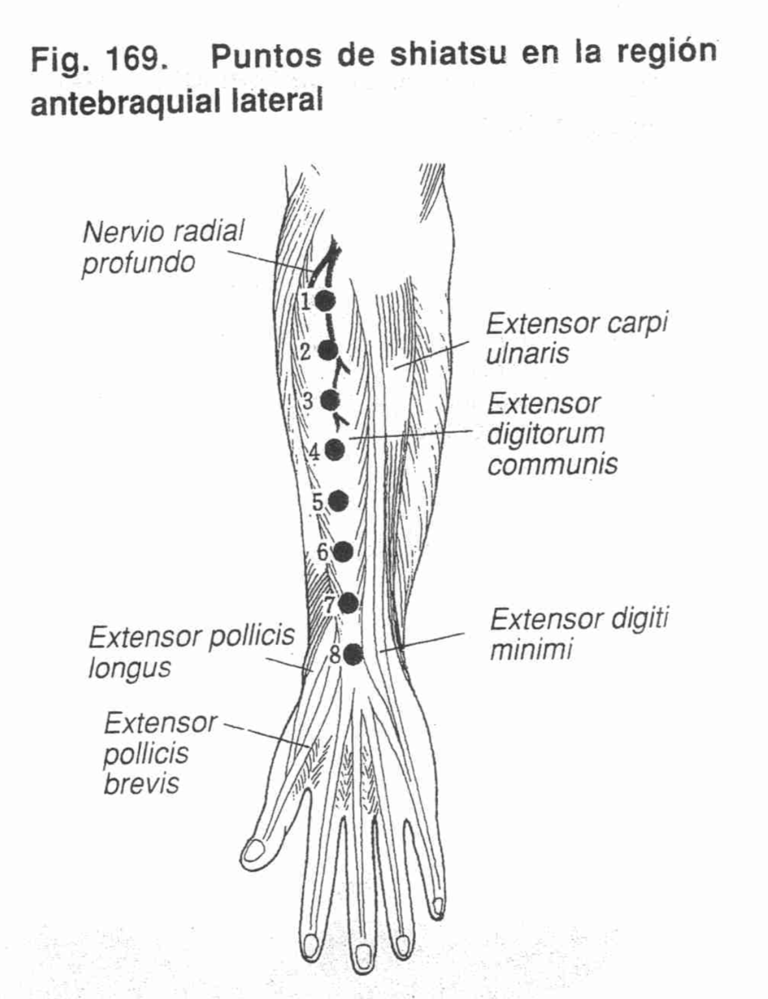
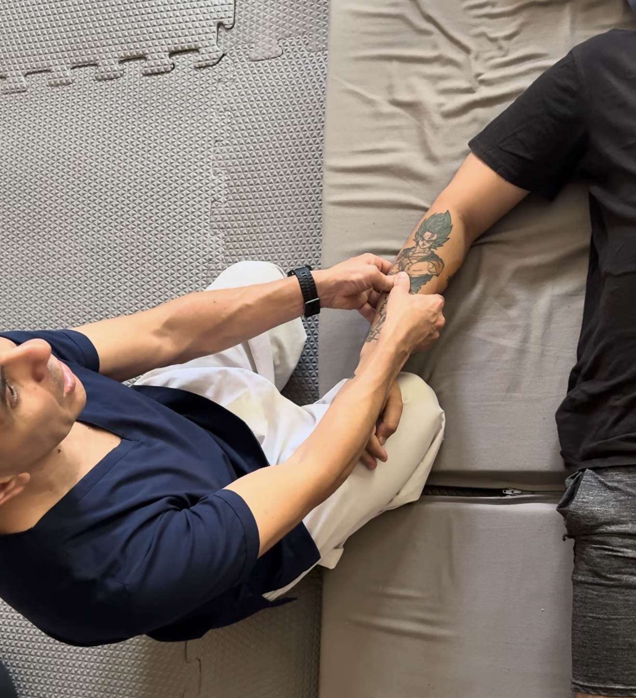
| Anatomía de la Región | Nervio radial profundo, extensor carpi ulnaris, extensor digitorum communis (extensor digital común), extensor del dedo meñique (extensor pollicis minimi), extensor largo y corto del pulgar[cite: 75]. |
|---|---|
| Posturas Iniciales | Paciente decúbito supino con o sin almohada, piernas rectas y brazo estirado a 45° con la palma hacia abajo[cite: 75]. Terapeuta en Seiza, frente a la mano del paciente y apoyamos la palma de su mano a la altura de la rodilla interior del terapeuta[cite: 76, 77]. |
| Mecánica Especial | Pulgar sobre pulgar. Del lado izquierdo pulgar derecho debajo[cite: 78]. Número de puntos: 8[cite: 79]. Localización del 1° punto: Sobre el músculo extensor digital común (doblando el dedo medio comprobamos el movimiento del músculo)[cite: 80]. |
| Dirección y Dinámica | La línea avanza hacia la muñeca (centro del pliegue de la muñeca)[cite: 81]. Dirección perpendicular; mientras presionamos los puntos deslizamos un breve estiramiento[cite: 79, 81]. |
| Tiempos de Protocolo | Primero 1º punto 3 veces 5 segundos[cite: 82]. Después la línea de 8 puntos se ejecuta 3 veces 3 segundos cada uno[cite: 82]. |
53. Región Dorsal de la Mano (Canales Intermetacarpianos)
Secuencia Visual del Paso
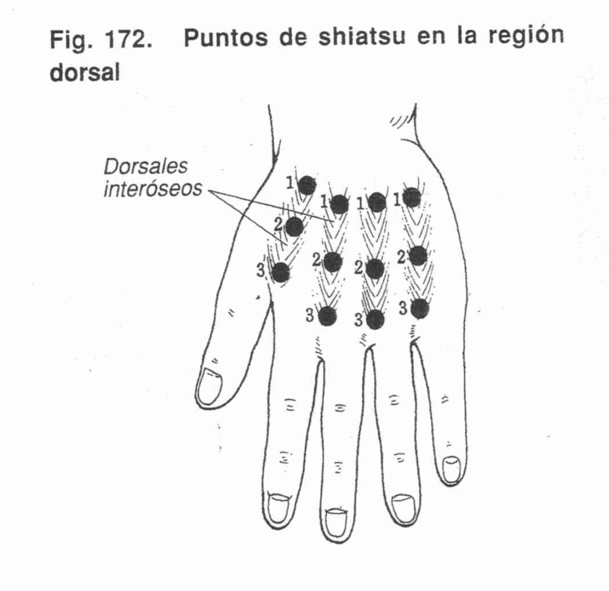
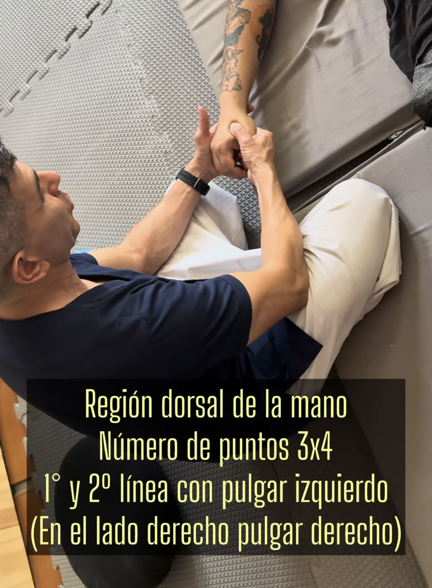
| Estructura Ósea | Músculos dorsales interóseos[cite: 83]. Paciente decúbito supino con o sin almohada, piernas rectas, brazo estirado a 45° y la palma hacia abajo[cite: 83]. |
|---|---|
| Postura del Terapeuta | Seiza, frente a la región[cite: 84]. |
| Alternancia Digital | Un sólo pulgar[cite: 84]. Matriz de 3 puntos x 4 líneas intermetacarpianas [cite: 85]. 1º y 2° líneas con pulgar izquierdo (en el lado derecho pulgar derecho) y 3º y 4º líneas con pulgar derecho (en el lado derecho pulgar izquierdo)[cite: 85]. |
| Sentido de Ejecución | Cada línea está situada entre los canales intermetacarpianos de los dedos [cite: 86]; comenzando en la 1º línea entre 1º y 2° dedo hasta la 4° línea entre 4° y 5° dedo[cite: 87]. Sentido de muñeca a dedos; 1 vez, 3 segundos[cite: 88]. |
54. Región Digital Dorsal y Lateral (Dedos de la Mano)
Secuencia Visual del Paso
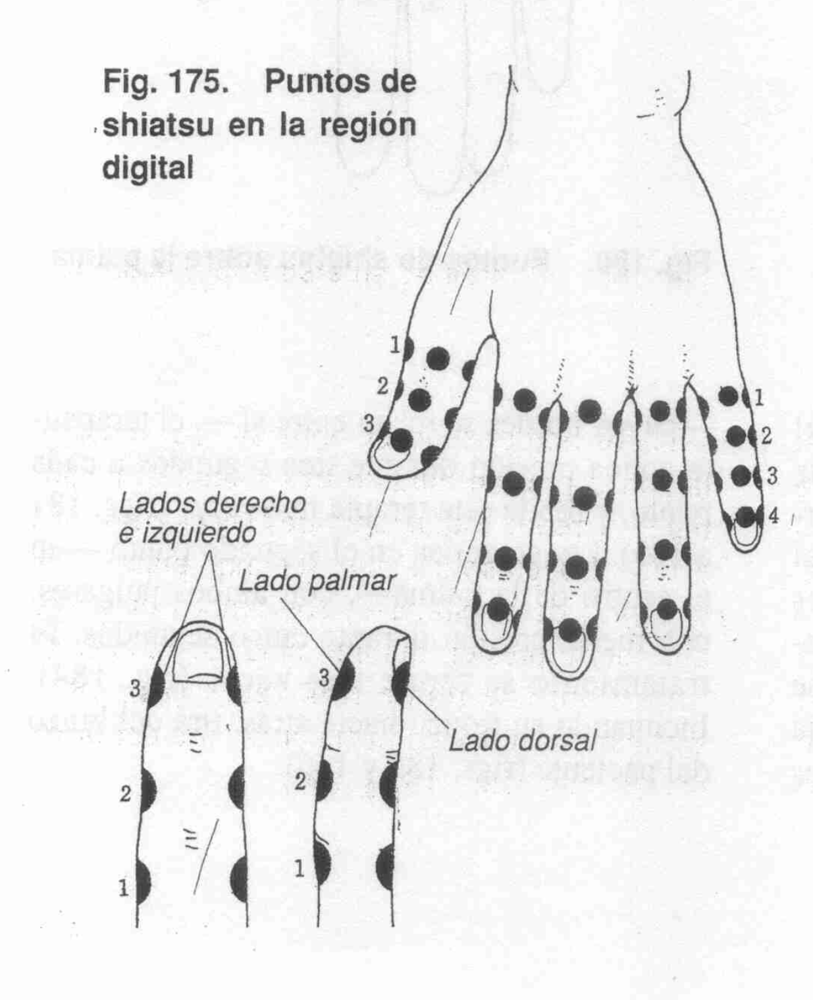
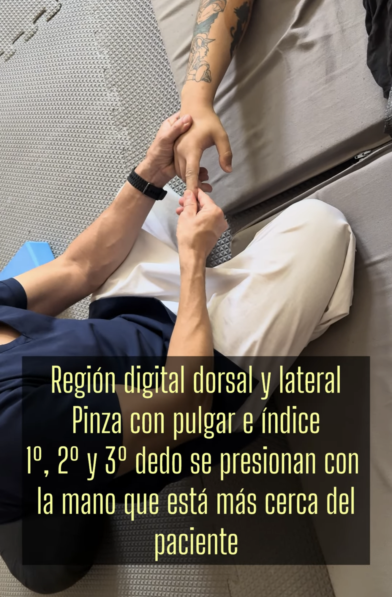
| Zonas del Dedo | Lados derecho e izquierdo, lado palmar y lado dorsal[cite: 89]. Paciente decúbito supino, mano a 45° palma abajo[cite: 89]. |
|---|---|
| Postura y Pinza | Terapeuta en Seiza frente a la región[cite: 90]. Tipo de presión en pinza con pulgar e índice[cite: 90]. |
| Estrategia de Manos | 1º, 2º y 3º dedo se presionan con la mano que está más cerca del paciente, 4º y 5° dedo con otra mano[cite: 91]. |
| Puntos y Anclaje | Número de puntos: 3 en el pulgar, 4 en los restantes dedos[cite: 92]. Los primeros puntos están encima de las articulaciones, excepto los últimos puntos que están sobre el nacimiento de la uña[cite: 93]. |
| Tracción Final | Hacia las uñas, y el orden del 1° al 5° dedo, terminando en cada uno de los puntos anterior/posterior y lateral/medial[cite: 94]. Últimos puntos presión y breve estiramiento; 1 vez, 2 segundos[cite: 92, 95]. |
55. Región Palmar (Eminencias y Centro)
Secuencia Visual del Paso
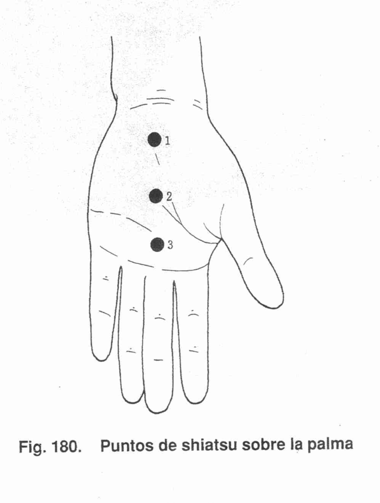
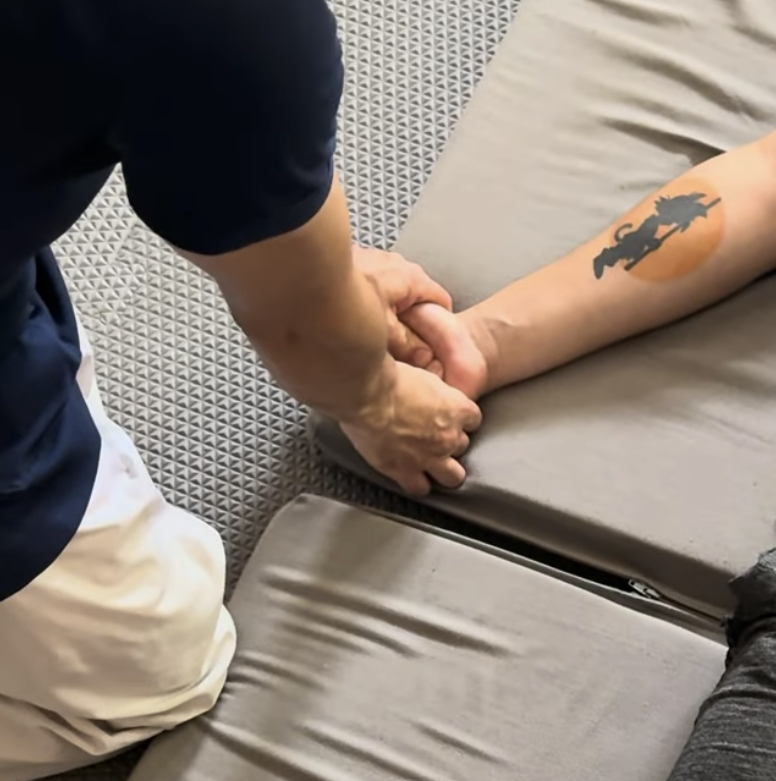
| Postura General | Paciente en decúbito supino con o sin almohada, piernas rectas, brazo estirado a 45° y con la palma hacia arriba[cite: 95]. |
|---|---|
| Postura del Terapeuta | Seiza, frente a la región[cite: 96]. |
| Tipo de Presión | Pulgares en forma de A[cite: 97]. Número de puntos: 3[cite: 97]. |
| Línea y Dirección | Dirección de la línea hacia los dedos[cite: 97]. Dirección de la presión perpendicular; 3 veces, 2 segundos[cite: 98]. |
56. Región Palmar Punto Central (Liberación y Tracción Axial)
Secuencia Visual del Paso
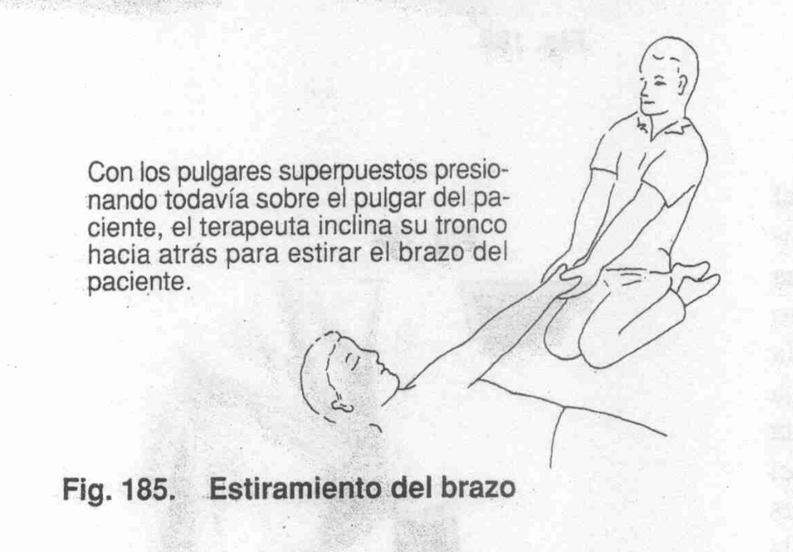
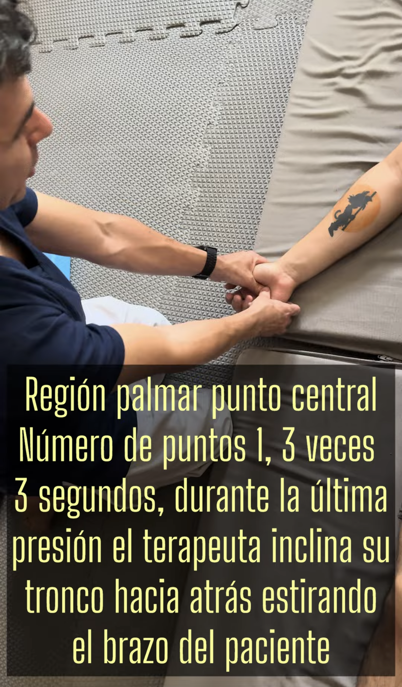
| Postura del Paciente | El paciente yace en decúbito supino con o sin almohada, piernas rectas y brazo estirado a 45° con la palma hacia arriba[cite: 98]. |
|---|---|
| Postura del Terapeuta | Seiza, frente a la región[cite: 99]. |
| Tipo de Presión | Pulgar sobre pulgar[cite: 99]. |
| Mecánica del Impulso | Número de punto: 1[cite: 101]. Acción biomecánica fundamental: Durante la última presión el terapeuta inclina su tronco hacia atrás estirando el brazo del paciente[cite: 100]. |
| Frecuencia Dosis | Se ejecuta en series de 3 veces, sosteniendo la carga corporal durante 5 segundos[cite: 101]. |
57. Maniobra Completa del Brazo (Estiramiento de Cadenas)
Secuencia Visual del Paso
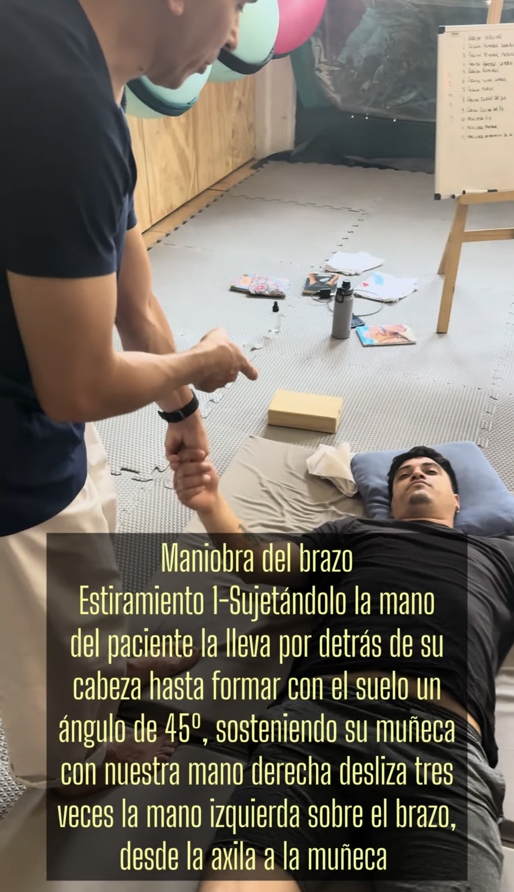
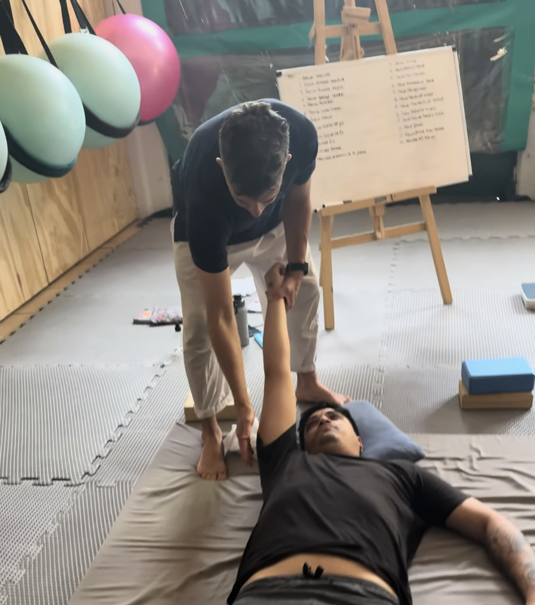


| Posturas Base | El paciente yace en decúbito supino con o sin almohada, piernas rectas[cite: 101]. Terapeuta posicionado en pie (Shizen) o básica (Kata Hiza)[cite: 102]. |
|---|---|
| Fase 1: Deslizamientos | Sujetando la mano del paciente la lleva por detrás de su cabeza hasta formar con el suelo un ángulo de 45°, sosteniendo su muñeca con nuestra mano derecha. Desliza tres veces la mano izquierda sobre el brazo, desde la axila a la muñeca (3 DESLIZAMIENTOS)[cite: 103, 104, 105]. |
| Fase 2: Caída Vertical | Tomando o sosteniendo la muñeca con ambas manos y dejando caer lentamente el brazo hacia el suelo (rozando la oreja) para llevar a cabo un estiramiento (5 segundos) (ESTIRAMIENTO 2)[cite: 105, 106]. |
| Fase 3: Elevación Tracción | Con ambas manos, de nuevo lo eleva y cuando está en vertical, tracciona de él unos segundos (ESTIRAMIENTO 3)[cite: 106, 107]. |
| Fase 4: Finalización | Finalmente lo baja lentamente hacia el suelo para dejarlo caer cuando esté a 45° (FINALIZACIÓN 4: BAJAR LENTAMENTE / DEJAR CAER CUANDO ESTÉ A 45°)[cite: 107, 108]. |
58. Protocolo de Transición (Lado Derecho)
Normativa del Manual:
Postura del paciente: El paciente yace en decúbito supino con o sin almohada, piernas rectas[cite: 108].
Se comienza de forma estricta desde la región inguinal de la pierna derecha y luego el brazo derecho, replicando la misma secuencia técnica completa[cite: 109].